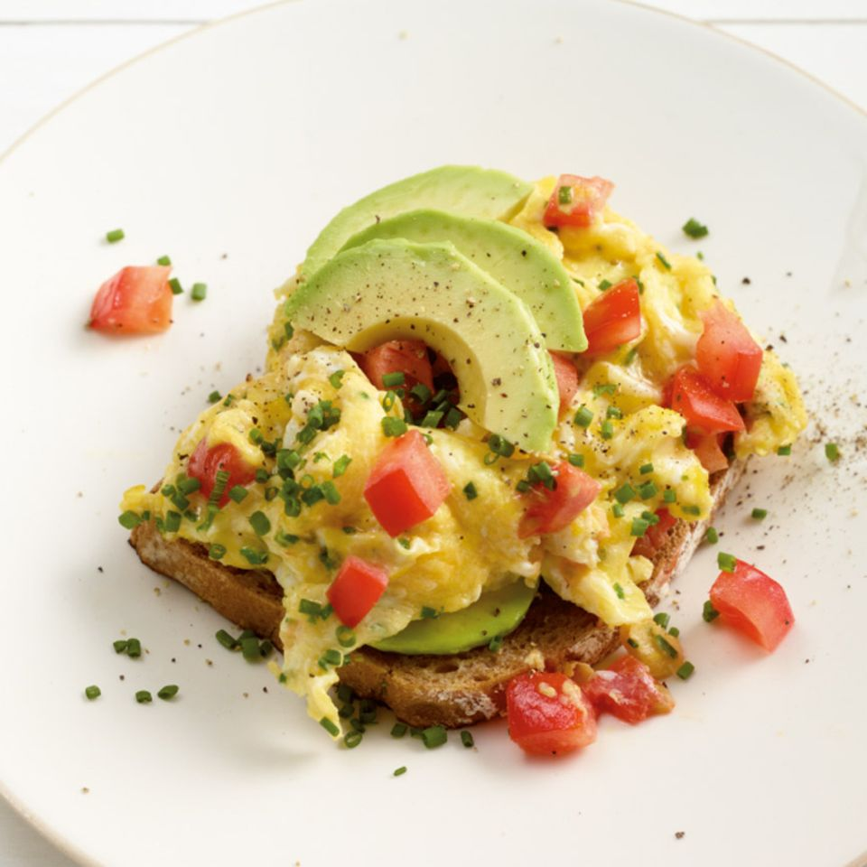

Dieses einfach Frühstück ist in nur 30 Minuten zubereitet und somit Ideal für den Sommer oder auch einfach nur als leckeres Fingerfood für Ziwschendruch.
| Benötigte Menge | Artikel |
|---|---|
| 2 | Tomaten (klein) |
| ½ | Bund Schnittlauch |
| 1 | kleine Avocado |
| 2 | Scheiben Roggenbrot |
| 100g | Butter oer Margarine |
| 1El | Öl |
| ½ El | Butter |
| ½ El | Salz |
| 4 | Eier (Kl. M) |
| 2 | El italienischer Hartkäse (gerieben) Pfeffer |
| 1 Priese | Pfeffer |